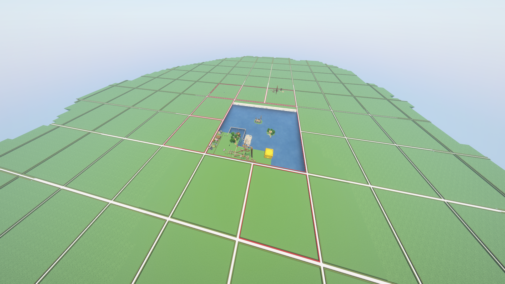
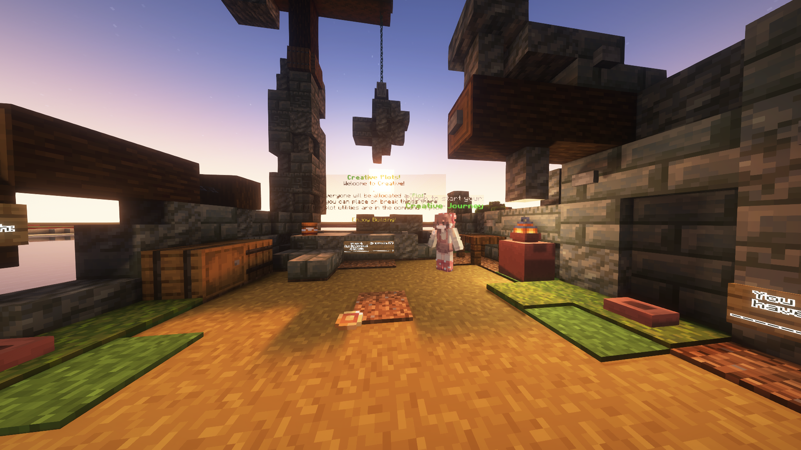

The creative world is managed using Plots. Each player gets a 100 × 100 plot as their own private building area. They can trust other players, set plot settings, and use creative mode freely within it.
Other players can fly around and view plots, but cannot make changes unless trusted by the plot owner or allowed by a plot flag.
The plot world is laid out in a grid:

A claimed plot has a red border; an unclaimed plot has a green border.
Currently each player can only own one plot, but this may be increased in the future.
When you enter Creative for the first time you will spawn in a small lobby — run /plot auto to claim your first plot:

This lobby is located at plot 0,0. You can always return to it with /warp Creative while in the creative world.
Commands
💡 TipYou can use /p instead of /plot for any of these commands.
Claiming & Managing Plots
/plot auto
Automatically finds and claims the nearest available empty plot for you.
/plot claim
Claims the exact plot you are currently standing on (if it isn't already owned).
/plot delete
Deletes your plot and unclaims it entirely. (Cannot be undone.)
/plot clear
Clears all blocks on your plot, resetting it to its original flat state. (Cannot be undone.)
/plot list mine
Lists all the plots you currently own.
Teleportation & Navigation
/plot home
Teleports you straight to your plot.
/plot h [number]
If you own multiple plots, use a number (e.g., /plot home 2) to visit them.
/plot visit [player]
Teleports you to another player's plot to check out their builds.
/plot middle
Teleports you to the exact centre of the plot you are currently standing on.
Sharing & Security
/plot add [player]
Allows a player to build on your plot, but only while you are online.
/plot trust [player]
Gives a player permanent permission to build on your plot, even when you are offline.
/plot remove [player]
Revokes a player's building access (works for both added and trusted players).
/plot deny [player]
Bans a player from entering your plot. If they are already on it, they will be kicked.
/plot undeny [player]
Lifts a plot ban, allowing the player to visit again.
/plot kick [player]
Immediately removes a player from your plot area.
Customisation & Other
/plot setbiome [biome]
Changes the biome of your plot (e.g., /plot setbiome plains).
/plot info
Shows detailed information about the plot you are standing on.
/plot chat on/off
Toggles a private chat channel for the plot you are standing on.
/plot comment [message]
Leaves a public comment on someone else's plot.
/plot inbox
Shows feedback and comments left by other players on your plot.
/plot merge
Merges your plot with an adjacent plot you own in the direction you are facing.